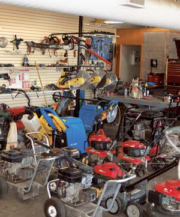
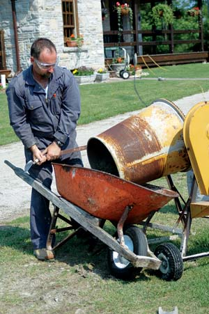
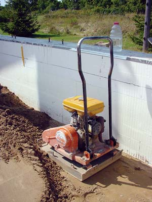
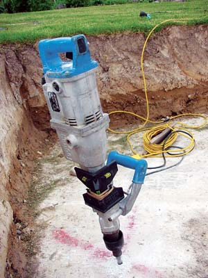
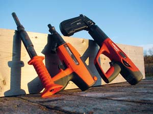
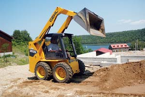
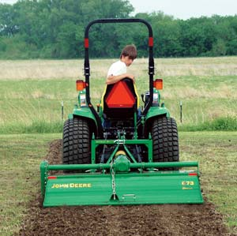

Tool-rental services offer thousands of great tools and machines. You can rent just about any power tool that exists, take on big projects and avoid the burden of maintaining and storing a tool you may need only once or twice a year.
Rental rates vary widely, but you can rent many tools for $20 to $50 a day, although large equipment may cost considerably more. For example, an electric concrete mixer (see photo in Image Gallery) might cost $50 a day to rent, while a skid-steer loader (see Image Gallery) will cost closer to $200 a day. Whether to buy or rent a particular tool usually hinges on two factors: cost and frequency of use. If your rental fees would pay for the purchase of the tool or machine in a year or two, then it probably makes sense to buy the item upfront. If not, rent it!
Renting tools gives you access to an entire universe of expensive equipment usually owned only by professionals. Here are just a few of the handiest tools you can rent.
Reciprocating saw. This tool is ideal for any kind of demolition work. A reciprocating (recip) saw slices through plastic, pipes and nail-embedded wood. Nowadays you’ll find powerful 28- and 36-volt cordless recip saws that are convenient to use when you’re working far from an electric outlet or in wet locations where a corded tool might be hazardous.
If your cutting area is unobstructed, then a one-piece recip saw will work fine. But if you’re working in close quarters, then look for a professional-grade articulated recip saw. These saws’ swiveling bodies allow them to bend at different angles, so you can configure the saw to cut around obstructions. Recip saw blades are expendable, so plan to buy several replacements when you rent the tool.
Concrete mixer/mortar mixer. Both kinds of mixers perform similar tasks, but to choose the appropriate one you need to know the difference between concrete and mortar. Concrete is a mixture of sand, cement, water and crushed stone. It’s often used as a stand-alone building material that’s poured into forms made of wood, metal or foam. Mortar is just sand, cement and water. It’s used to bond brick, blocks or stone.
Drum-style mixers are simple machines designed to mix concrete, but with special care you also can use them to prepare mortar. Prop up the machine at a slight angle with blocks underneath the mixer frame so the drum is almost horizontal. This change in the drum’s angle helps keep the mortar tumbling in the mixer. Without it, the mortar may stick to the walls of the drum instead of mixing. For most homestead work, a drum-style concrete mixer is the ideal multipurpose masonry tool.
If you need a large quantity of mortar, then a mortar mixer is the way to go. It incorporates a series of internal paddles that scrape and churn the sand, cement and water into a smooth combination. Just remember that you can’t mix concrete in a mortar mixer, because the stone will jam between the paddles and the drum.
Power compactor. This tool is mandatory when you’re pouring concrete floors and sidewalks or laying masonry pathways. A compactor can pack down areas filled with dirt, as well as undisturbed soil, to provide solid support for pavement. For most jobs, a walk-behind “plate” compactor works fine. Models weigh 100 pounds or more and use a flat metal plate that vibrates under engine power to compact the ground underneath. Most plates measure between 18 and 24 inches on each side.
For compacting in tight quarters, a smaller machine generically called a “jumping jack” uses a small engine set atop an 8-by-8-inch metal plate. Think of it as a heavy-powered pogo stick with a foot for compacting.
Rotary hammer (masonry drill). This tool is ideal for drilling holes larger than a half-inch in concrete, brick and stone, as well as for chipping masonry surfaces with a flat chisel or a point. I often use a rotary hammer to install anchor bolts into stone, concrete, brick and block. You drill the hole, then set an expanding masonry anchor in place and tighten it up with a wrench. It locks firmly in place and is ideal for anchoring shelves or metal brackets of all kinds. With larger rotary hammers, you can drill holes up to a foot in diameter using a water-cooled coring bit.
Some rental stores require you to buy your own drill bits, because they can break easily. These bits can be expensive, so ask about the store’s policy before you rent the drill.
Powder-actuated tools (PATs). To shoot fasteners directly into concrete or steel plates without predrilling, you need the power of gunpowder. PATs use an explosive charge to propel nail-like pins into place. They’re ideal for basement, barn and garage renovations - wherever you need to anchor wood and steel studs. Single-shot models cost less than $50, but large jobs call for something more efficient. Semiautomatic and fully automatic PATs are much faster than single-shot models, because you don’t have to load a new cartridge and pin before every shot. You may have to pass a simple safety test before you can rent a PAT.
Tractor-mounted rototiller. A tractor-mounted tiller is great for establishing new garden beds in sod and heavy soil, and it’s maneuverable even in tight locations. The easiest way to get one onto your land is by hiring an operator with a machine to do the job for you. You don’t have to haul a big machine back and forth, and the time and money that saves will more than pay for the extra cost of the operator. Once the land has been broken with a tractor tiller, walk-behind tillers become much more practical for maintaining the soil.
Walk-behind tiller. If your garden is too small to justify owning a large rototiller, then rent one at the beginning and end of your growing season. Choose a rear-tine tiller with at least eight horsepower and wheel weights. These factors are crucial, especially in tough tilling conditions. Lots of power is necessary to churn heavy soil, but you also need a heavy machine that forces the tines down into hard dirt.
Brush mower and string trimmer. If a meadow gets ahead of you, or you need to cut paths in an overgrown pasture, rent a brush mower. Got some rocky, rough or sloped ground to clear? A heavy-duty string trimmer is ideal for these situations. Trimmers with larger engines often include a small circular blade for trimming bushes and small trees up to a couple inches in diameter. Some models are designed to be supported by a body harness, so you can work longer without tiring from the weight of the trimmer.
Mini-excavator. These are scaled-down versions of the big diggers you see on commercial building projects. A mini-excavator may lack muscle, but it compensates for it in finesse. Mini-excavators can maneuver into tight places, which makes them ideal for working around buildings, burying water lines or building landscape features. Even on open land, mini-excavators are ideal for creating precise utility trenches.
As with tractor rototillers, the best approach is to hire an operator with a machine. Know the capabilities of the equipment so you can give the operator explicit instructions about what you want done on your property - and how. Will the machine drive over sod that you’d like to preserve? If so, request one with rubber tracks - they’re far less damaging to the soil than all-metal tracks. Will you be digging trenches? Buckets as narrow as a foot wide are available that make far less mess than wider ones. To dig a foundation hole for a small building, ask for a toothless bucket, which allows the operator to clean the bottom of the hole thoroughly.
Skid-steer loader. The ultimate landscaping power tool, the skid-steer loader shines for safe, efficient movement of rock, gravel and soil into and out of small spaces. It’s named for its steering system, which makes it very maneuverable. A car or tractor turns by angling its front wheels, but a skid-steer pivots by spinning its wheels faster on one side of the machine than the other. With a skid-steer loader, you can move and spread half a dozen dump truck loads of fill in just one day.
There’s a long list of other tools and equipment you might consider renting, including masonry saws, scaffolding, wallpaper steamers, commercial-duty paint sprayers, concrete-floor levelers and hardwood sanders. Renting tools is a great way to maximize your time and money. By renting, you gain access to machines and tools you need only occasionally. You’ll be amazed at the jobs you can tackle and how efficiently you can get things done.
|
 MATTHEW T. STALLBAUMER Tool-rental stores offer a wide selection of equipment that can make DIY projects easier. |
 ROBERT MAXWELL This drum-style concrete mixer can be used to prepare both concrete and mortar. |
 STEVE MAXWELL The flat metal plate of this compactor ensures the ground is solid below poured concrete. |
|
 STEVE MAXWELL A rotary hammer drill bores holes in concrete and stone. |
 STEVE MAXWELL Powder-actuated tools use an explosive charge to shoot fasteners directly into concrete and steel. Models come in single-shot, semiautomatic and fully automatic. |
 ROBERT MAXWELL Skid-steer loaders make large landscaping projects possible.
|
|
 BRYAN WELCH Hire an operator with a tractor-mounted tiller and watch as new garden beds appear. |
|
|